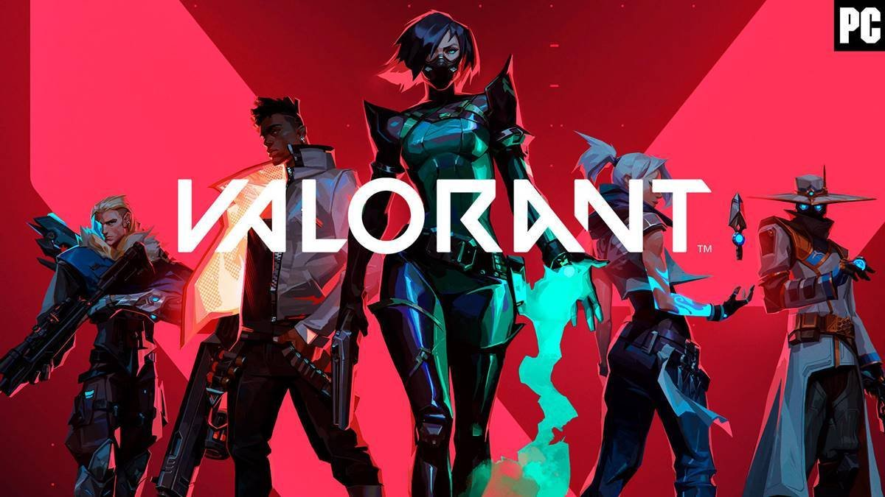

Atualização 2.10 traz novo mapa e ajustes de balanceamento
Publicado em 29 de Junho de 2023
A atualização 2.10 de Valorant foi lançada hoje, trazendo o novo mapa "Breeze" e várias alterações de balanceamento para agentes e armas. Essa atualização promete impactar significativamente a jogabilidade e o meta do jogo.

Torneio Valorant Masters tem recorde de visualizações
Publicado em 27 de Junho de 2023
O torneio Valorant Masters, realizado no último fim de semana, atraiu um recorde de espectadores, com milhões de pessoas assistindo às partidas emocionantes. As equipes participantes mostraram um alto nível de habilidade e estratégia, proporcionando um espetáculo incrível para os fãs do jogo.
Nova agente "Astra" disponível no jogo
Publicado em 25 de Junho de 2023
A agente celestial Astra foi adicionada recentemente ao jogo. Com suas habilidades únicas baseadas em estrelas, ela pode controlar o campo de batalha e surpreender os inimigos. Os jogadores estão ansiosos para dominar essa nova agente e explorar suas capacidades estratégicas.